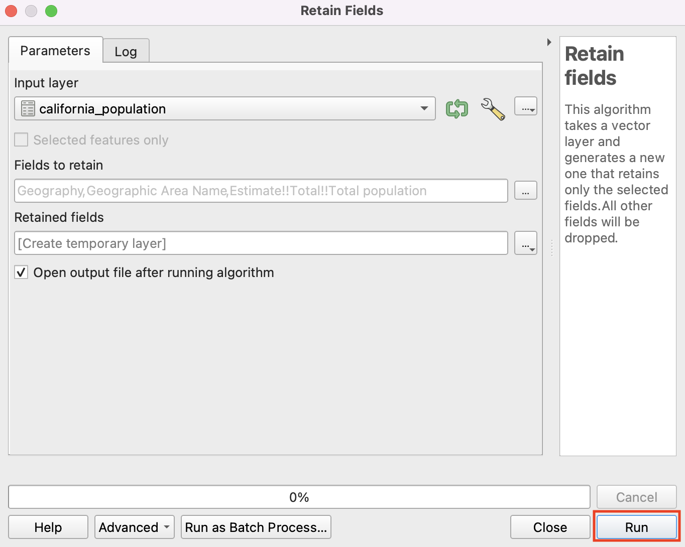
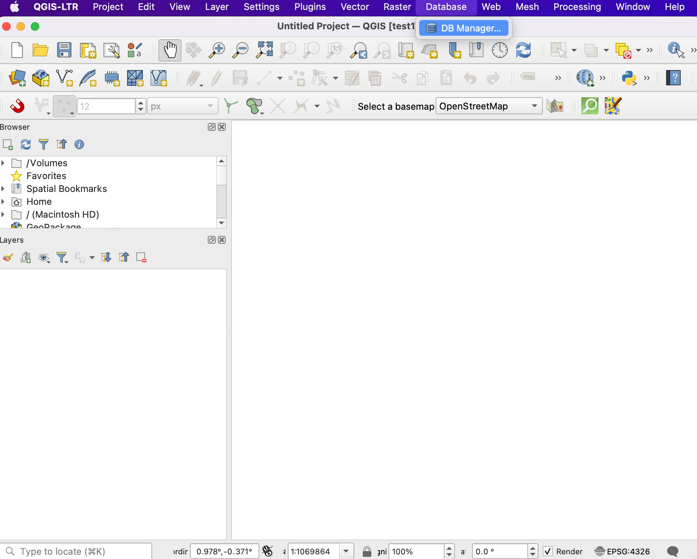
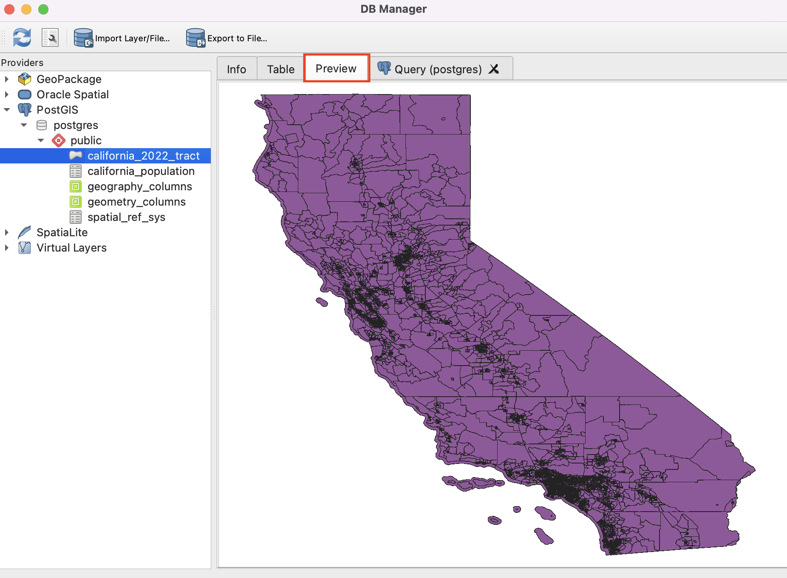

In this tutorial, will see a Join using postgreSQL. This is when need to add some the shapefile from other tabular data. For this workflow, we will prepare the data to create a population density map for the 2022 for California. We use a shapefile census tracts California and a population table the US Bureau.
can get more information on downloading the from the tutorial which demonstrates same using QGIS tools. - https://www.qgistutorials.com/en/docs/3/performing_table_joins.html.
You can download a copy of both the datasets below.
1 ACSST5Y2022.S0101_2024-09-16T032248.zip
1. We the input data the server using QGIS. First, to server using the PostgreSQL option in the browser panel. Right- on PostgreSQL –> Connection. You can this if already connected the server.
2. will see the dialogue where you need in the details and to connect the server. Fill the and ‘Ok’ to connect.

3. Next is upload the table and shapefile to the database. will add the population CSV the correctly and the field type. on the ‘Data Source Manager’ and the ‘Delimited Text’ option we are adding the CSV file.

4. Browse to the file and set the layer as ‘california_population’ to simplify. Our CSV two headers the first one irrelevant. Under the ‘Record and Fields Options’ we will choose 1 column to discard from the top. on ‘Add’ to see the ‘california_population layer loaded in QGIS.’

5. We have over 450 fields table. We the total estimated population some the information. Let’s delete fields that required. Processing -> Toolbox search for ‘ Fields’ tool.

6. ‘california_population’ as Input Layer and click on … button field selection.

7. Select the top three fields are ‘Geography’, ‘ Area Name’ and ‘Estimate!!Total!!Total Population’ and click ‘Ok’.

8. Output field empty and click the ‘Run’ button generate temporary with fields.

9. Now, add to the postgres database. Go to Database - > DB Manager.

10. the DB Manager window, you will a provider and the server connection. has the default ‘public’ schema. We will upload tables to the schema. Select the schema click on ‘Import Layer/File’ to upload the ‘Retained Fields’ table.
11. You will window to upload the layer where you will the input layer, give the name, create an ‘id’ as primary key. Check the to convert field names and click ‘Ok’.

12. the message when it successfully.

13. step is to the California tracts shapefile on the database. has spatial information and a postGIS extension work the spatial data on postgres.
the to ‘ Window’.

14. In window, following command add postGIS your server. Click ‘Execute’ to add the extension.
‘CREATE EXTENSION postgis’

15. Now we are ready to upload the ‘tl_2022_06_tract.shp’ to server. We directly add to the server using ‘DB Manager’. Click on ‘Import layer/file’ and browse to ‘tl_2022_06_tract.shp’ layer give the name ‘california_2022_tract’. Let’s for a key and a geometry column. check option to convert fields lowercase and add to the features for faster processing. ‘Ok’ to upload.

16. see the ‘ was Successful’ message as soon as gets imported to the database. can tables ‘public’ schema. the schema and switch to the ‘Table’ to the table. Similarly you can switch to the ‘Preview’ to the the shapefile.


17. We run the total population column the shapefile a common geoid. The ‘geoid’ field in the ‘california_2022_tracts’ has the the ‘geography’ field in the ‘california_population’ long id tracts the from which we can get 11 characters to match with the values in ‘geoid’ the tracts table. We will apply queries given below to a named ‘geoid’ in population table a unique field.
a new column ‘geoid_pop’ to the table ‘california_population’.
ALTER california_population ADD geoid_pop VARCHAR(20);
the ‘geoid_pop’ column characters of the ‘geography’ field starting from 10th position.
california_population
SET geoid_pop = SUBSTRING("geography"
FROM CHAR_LENGTH("geography") - 10
FOR 11);

18. You will new ‘geoid_pop’ is in ‘california_population’ table.
19. Now, we will create a named ‘california_tract_with_pop ’ by population information from california_ table to the table. Execute the query as see below and refresh the new table added ‘public’ schema.
query selects columns the ‘california_2022_tract’ table and selects "geographic area name" and "estimate!!total!!total population" columns from the ‘california_population’ table. We have t1 and t2 input tables in the columns.
CREATE california_tract_with_pop AS
t1.,
t2."geographic name",
t2."estimate!!total!!total population"
FROM california_2022_tract t1
JOIN california_population t2 ON t1. = t2.geoid_pop

20. can view the table and right to the option to add it to the canvas.

21. The has and total population for all tracts which used for further analysis such as creating density map. The to create QGIS is available at - https://www.qgistutorials.com/en/docs/3/performing_table_joins.html.